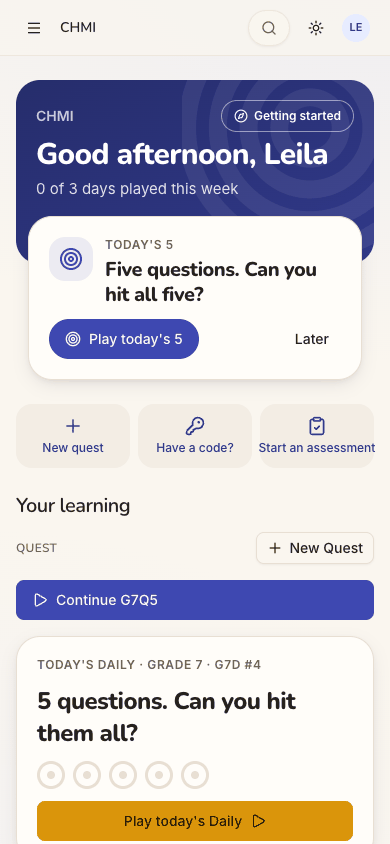
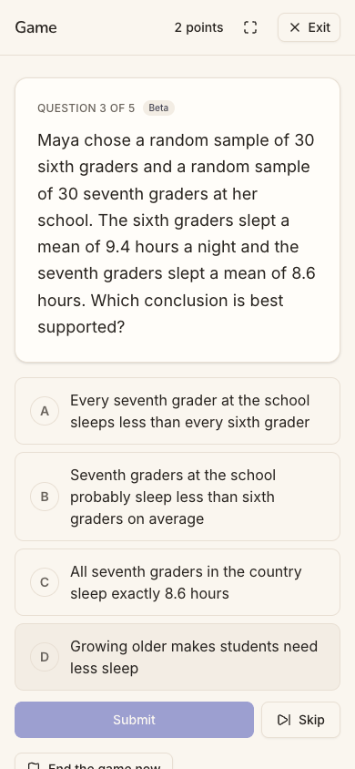
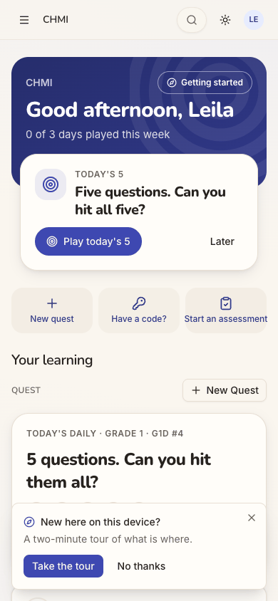
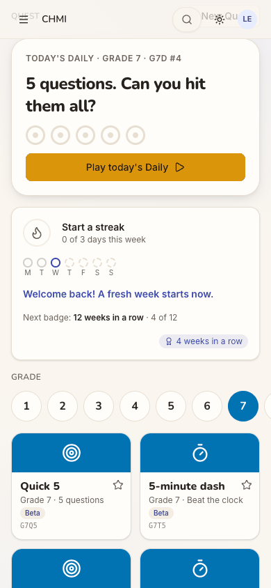
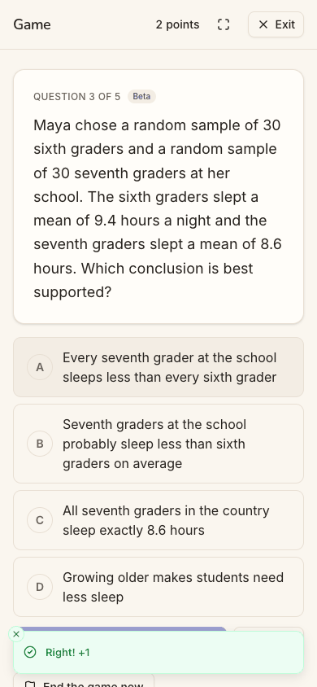
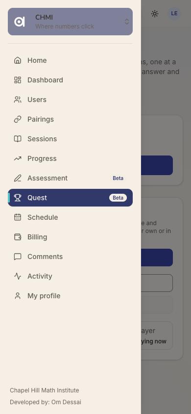
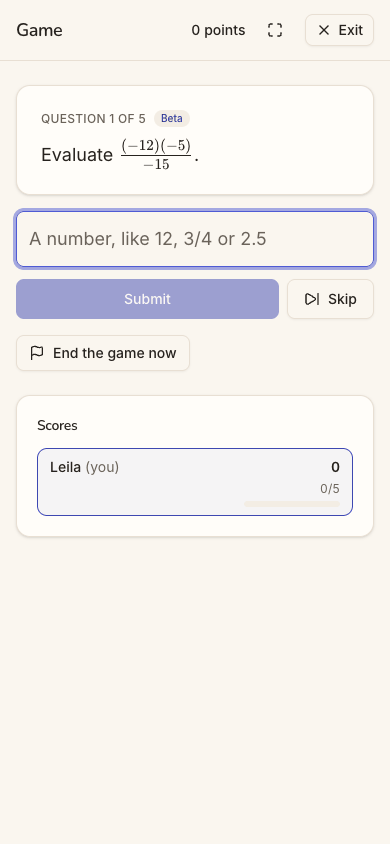
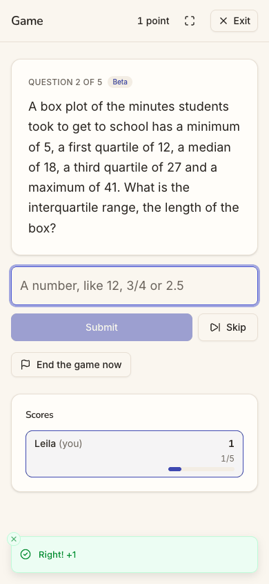

Who: Leila Eriksen is a 7th-grader ("Grade 7 Mathematics" in her profile) and a student at Chapel Hill Math Institute (chmi). Through October she played Quest three days a week, then stopped for ten days. She is cohort C6, the Quest player ("Let me play."), inside a tutoring space, so she also carries C5, the tutored student (docs/member-home-plan.md). She wants to pick up where she was: see her streak, play, and come back to a quest she left half done.
Outcome: 1/1 journeys passed, 0 skipped, 17 of 17 steps verified. She signed in and landed on her home (step 3). "Welcome back! A fresh week starts now." was there, with this week's dots, the next badge and the Daily (step 4). She started a Grade 7 Quick 5, answered two questions, both right, and left (steps 6-10). Back home, a "Continue G7Q5" bar was waiting (step 12). It did not resume her quest. It started a new game at Question 1 of 5 with 0 points (steps 13-14). She got her quest back only through a detour. On the Question Quest page she picked the older of two identical "Playing now" rows, which held Question 3 of 5 and 2 points (steps 15-16). A reload kept it (step 17). The journey's end, "she has resumed", was reached, but by a workaround (sev3).
Conversion figures (counted from the entry point):
5 (Sign in, Continue with Google, No thanks, Grade 7, Quick 5)
0
2 (sign-in, countdown)
0
Leaving and resuming (steps 9-16)
8 views
6 (Exit, menu, Home, Continue, Exit, the older game)
0
1 (a second countdown)
2 (Exit landing on the Question Quest page; Continue starting over)
Whole run, 17 steps
7 distinct (16 views)
13
2 (the two answers)
3
2
The shortest real way back to her quest is 2 taps from inside the game: Exit, then the right row on the Question Quest page. The way the home offers ("Continue") takes 4 taps and lands in the wrong game.
Stickiness: "Welcome back" works as intended. It is warm, with no loss message. The rest of the card works against it. It says "Start a streak" beside "4 weeks in a row" and "4 of 12" towards a badge her break has already reset (step 4). After she plays, the home does not move: Next up still offers Today's 5, and the week still reads 0 of 3 (step 12). Her two answers count for nothing on the screen she returns to.
The 3 screens Leila would notice most:
Step 4, My progress. The blue "Welcome back! A fresh week starts now." is the first thing on the home that talks
to her as someone who was here before. It is the right tone for a player who drifted away. But the same card is titled "Start a streak" and carries a "4 weeks in a row" chip, and "Next badge: 12 weeks in a row · 4 of 12". Is she on a streak or not? For a C6 player, the streak is the reason to come back three days a week, so it has to be readable at a glance. step 4
Step 14, "Continue" starts over. She tapped "Continue G7Q5" expecting Question 3 and her 2 points. She got a new
countdown, then "Question 1 of 5", "0 points" and a question she had not seen. For a player who left in the middle, being sent back to the start is the moment a short session turns into "never mind". step 14
Step 15, two identical games. The Question Quest page now lists "8XH2F5 G7 5 questions Single player Playing now"
and "9945HK G7 5 questions Single player Playing now". Only the code tells them apart, and neither shows how far she got. She has to guess which one holds her answers. step 15
Continue starts a new game instead of resuming the one she left
Issue
After she left a Grade 7 Quick 5 at Question 3 of 5 with 2 points, her home showed a blue "Continue G7Q5" bar (step 12). Tapping it ran a new "THE QUEST BEGINS" countdown (step 13). It opened a different game (/quest/games/87339907…, not the df4ca8d1… she left) at "Question 1 of 5", "0 points", with a new question (step 14). Her game was still open, and so was the new one. The Question Quest page then listed two rows, "8XH2F5 G7 5 questions Single player Playing now" and "9945HK G7 5 questions Single player Playing now". Only the code tells them apart, and neither shows progress (step 15). She resumed only by guessing the older row (step 16). The label adds to it: "G7Q5" is a code, not words she knows. "Continue" promises the game she left; the bar replays the tile's settings.
Violation
cuj-contract, steps 13-14 (expected: Question 3 of 5 with 2 points; observed: a new game at Question 1 with 0 points) and step 15 (expected: one open quest; observed: two identical rows); Nielsen #2 Match between system and the real world ("Continue" means resume); Nielsen #1 Visibility of system status (no progress on either row); Nielsen #5 Error prevention (a second open game made silently).
Severity
Classify: the journey's end state is reached only through a workaround, and the step that should do
it goes to the wrong state. For C6, Continue is the second action of their Next up and the whole return loop: a player who leaves mid-quest and comes back is exactly who it is for. Starting over loses her answers and points, and every use leaves another orphaned "Playing now" game. It is not a 4: the Question Quest page still reaches the real game.
Evidence

step 12step 14step 15

step 16 Repro: as a chmi student on the home, choose Grade 7 and tap Quick 5. Answer two questions, tap Exit, then open the menu and Home. Tap "Continue G7Q5": a new countdown and Question 1 of 5. Exit: two "Playing now" rows. The source agrees with what was seen: apps/web/src/features/play/play-home.tsx lines 229-238 render Continue {last.label} with onClick={() => void start(last.label, last.request)}, which creates a game from the device's last tile request and never looks for an open one.
Fix
Make Continue resume. When the reader has an open single-player game in this space (the Question Quest page's games list already returns them as "Playing now"), link the bar to /quest/games/<id> of the most recent one. Label it in words with its progress: "Continue Quick 5 · Grade 7 · question 3 of 5". Only when no game is open, offer "Play Quick 5 · Grade 7 again". When a tile is started while the same tile's game is open, ask "You have a Quick 5 in progress. Continue it or start over?" In the games list, show each row's progress ("2 of 5 answered") and the tile's name, and end or hide an abandoned single-player game once a newer one of the same tile starts. Add a web e2e check: answer two, exit, tap Continue, and assert "Question 3 of 5" and the same game id. Then check the app's Continue for the same behaviour.
sev2
After she plays, the home does not move: Next up and the week ignore her open quest
Issue
At step 12 Leila has a half-finished quest. Next up, the card that leads her home, still offers "TODAY'S 5 · Five questions. Can you hit all five?", the same as before she played (step 3). Continue is a secondary bar further down, under "Your learning". The band still says "0 of 3 days played this week", and Wednesday's dot is still an empty "today" ring. She has just answered two questions correctly. Nothing on the home says the day will count once she finishes, so leaving looks free.
Violation
cuj-contract, step 12 (expected, per C6's Next up in docs/member-home-plan.md: "Game invite → Join; Continue; Today's 5", so an open quest outranks Today's 5; observed: Today's 5 leads); Nielsen #1 Visibility of system status (her play leaves no trace on the home).
Severity
Classify: an observable mismatch with the cohort's design, and real friction, but Continue is on the
same screen. For a returning C6 player the first session back decides whether the habit restarts. A home that shows "0 of 3" right after she played tells her the effort did not count.
Evidence
step 12

step 3 Repro: as in the finding above, up to the home after Exit. Compare Next up and the band before (step 3) and after (step 12) the two answers: both are unchanged. Next up's link moved from /quest/daily/NC26.3 to /quest/daily/NC26.7 after she chose Grade 7. That is the only change.
Fix
Add the open game as a Next up candidate above daily in nextUpCandidates: "Finish your Quick 5 · question 3 of 5" with Continue as its button (the resume link from the finding above). While a game is open, show today's dot half-filled with "Finish your quest to count today". The day is written at a game's end, so this needs no new write during play, only the client knowing a game is open.
sev2
My progress says Start a streak, 4 weeks in a row and 4 of 12 at once
Issue
The habit card (step 4) has no "My progress" heading. It reads, top to bottom: "Start a streak · 0 of 3 days this week", the seven dots (Monday and Tuesday not played), "Welcome back! A fresh week starts now.", "Next badge: 12 weeks in a row · 4 of 12", and a chip with an award icon, "4 weeks in a row". She did play 3 days a week for four weeks, but the week of 26 October had no play, so her run is broken. The chip is a badge she earned, but it looks like her current streak. "4 of 12" counts that broken run, though the 12-week badge needs a new unbroken run of 12. Her real progress towards it is 0.
Violation
cuj-contract, step 4 (expected: the streak, the dots and the next badge, consistent with a missed week; observed: three statements that disagree); Nielsen #1 Visibility of system status; Nielsen #2 Match between system and the real world (a badge chip worded like a live count).
Severity
Classify: an observable mismatch, with no workaround needed to play. For C6 the streak is the stated
reason to come back. A card that says she is both starting and four weeks in blurs the goal "3 days this week". "4 of 12" also promises progress she does not have, which will feel like a loss later.
Evidence
step 4 Repro: a student with three play days a week for four weeks, a missed week, then a visit (here: Leila, with the inserted days in the Appendix). Scroll the home to the habit card. In the source, BADGES names weeks_4 "4 weeks in a row", and nextBadge counts weeks_12 from best_weeks (packages/shared/src/habit.ts), which explains both numbers.
Fix
Title the card "My progress". Put earned badges in their own labelled row ("Badges: 4 weeks in a row") rather than as a bare chip. For streak badges, count have from the current run (weeklyStreak().weeks), not best_weeks, and show the best separately: "Your best: 4 weeks in a row. Play 3 days this week to start a new run." Keep "Welcome back"; it is the right voice.
sev2
Her home leads a 7th-grader with Grade 1
Issue
On landing (steps 3-4) the grade row had Grade 1 selected, in Grade 1's pink, with a Grade 1 Quick 5 and "TODAY'S DAILY · GRADE 1 · G1D #4" on the board. Next up's "Play today's 5" linked to /quest/daily/NC26.3, a Grade 3 set, though the card itself names no grade. So the first screen offered two different grades, and neither was hers. She had to find 7 in the row herself (step 5). After that, the board, the Daily and Next up all followed Grade 7.
Violation
cuj-contract, steps 3-5 (expected: a returning player's home leads with her level; observed: Grade 1 on the board, Grade 3 behind Next up); Nielsen #4 Consistency and standards (two cards on one screen pick different levels); Nielsen #7 Flexibility and efficiency of use.
Severity
Classify: real friction, with an easy workaround (one tap on 7). For a 7th-grader, Grade 1 tiles read
as "this isn't for me". A younger player might start the Grade 1 Daily without noticing. That costs her the one Daily a day and teaches the app nothing.
Evidence
step 3step 4

step 5 Repro: sign in as Leila on a fresh device. The grade row leads with 1, and the accessibility tree shows Next up's link to /quest/daily/NC26.3. A caveat: her inserted October play days carry no quest level, and the seed gives her no Quest level, so the app had no level from play. The default it fell back to is what is reported.
Fix
When neither the device, a last quest nor a Quest level gives a grade, ask once on the board: "Which grade are you in?", a one-tap row that is remembered for the space. Choose Next up's Daily and the board's Daily from the same level function, so the two cards never disagree. Show the grade on Next up's card ("Today's 5 · Grade 7").
sev2
Exit drops her on the Question Quest page, which says 0 points
Issue
Mid-game, the only way out on screen is "Exit", top right (steps 7-9). It left at once, with no word that the game is kept, and landed on the Question Quest page (/quest), not on the home she came from (step 10). That page leads with "Your Quest · No level yet · 0 answered · 0 points" and a big Start button, seconds after the game header said "2 points". Her game is a small row at the bottom, "9945HK G7 5 questions Single player Playing now". To get home she needed the menu, a 13-item list (step 11), and Home.
Violation
cuj-contract, step 10 (expected: back to her home, with the quest kept; observed: another feature's page, with a points total of 0); Nielsen #1 Visibility of system status; Nielsen #3 User control and freedom; Nielsen #4 Consistency (two different "points" a screen apart).
Severity
Classify: a wrong turn (counted as a dead end) and a contradiction, with no harm to the game. For a
C6 player, "0 points" after scoring 2 reads as "my points were lost". Question Quest's points and a game's score are different things, and nothing says so.
Evidence

step 9step 10

step 11 Repro: start any tile from the home, answer one question, tap Exit.
Fix
Make Exit return to where the game was started (the home, for a tile), with a toast: "Your Quick 5 is saved. Continue from your home." On the Question Quest page, call the game score something else ("score") or add "Games don't add Quest points". List open games above "Your Quest" when there are any.
sev2
Sign in opens a sheet titled Sign up free
Issue
Leila has an account, so she taps the header's "Sign in" (step 1). The sheet that opens is titled "Sign up free", with "Keep your scores, unlock every quest and play with your family" (step 2). Its one button, Continue with Google, does sign her in. But for a moment the screen says she is making a new account. J05 found the same sheet.
Violation
cuj-contract, step 2 (expected: a sign-in sheet; observed: a sign-up sheet); Nielsen #4 Consistency and standards (the sheet's title contradicts the button that opened it).
Severity
Classify: an observable mismatch. For a returning C6 player it costs a moment of doubt ("Will this
make a second account and lose my streak?") on the one screen every return goes through.
Evidence
step 1step 2 Repro: signed out at /, tap "Sign in" in the header.
Fix
Title the sheet by the button that opened it. From "Sign in": "Welcome back", with "Sign in to keep your streak and scores". From "Sign up free": as now. The same Google button serves both.
Walkthrough
Step 1 — Open the app signed out Expected: the guest page with a way to sign in. Observed: match. The page shows "Math quests. Hit the target.", a big "Sign up free", Today's 5 at Grade 4, and "Sign in" as an outlined button in the header.Step 2 — Tap Sign in Expected: a sign-in sheet. Observed: a sheet titled "Sign up free" with Continue with Google.Step 3 — Continue with Google, land on her home Expected: her home in Chapel Hill Math Institute, with what a returning player needs. Observed: "Good afternoon, Leila", "0 of 3 days played this week". Next up offers "TODAY'S 5" (its link is a Grade 3 set). Below are three quick actions and the Quest board, whose Daily is Grade 1. A "New here on this device? Take the tour" toast covers the bottom. No Continue, which is right, since she has no quest open yet.Step 4 — Dismiss the tour, scroll to My progress Expected: "Welcome back", this week's dots, her streak and the next badge. Observed: all present. The card is titled "Start a streak · 0 of 3 days this week", with "Welcome back! A fresh week starts now." in blue. Below: "Next badge: 12 weeks in a row · 4 of 12" and a "4 weeks in a row" chip. The grade row below leads with Grade 1.Step 5 — Choose Grade 7 Expected: her grade's tiles. Observed: match. Grade 7 turns blue, and the Daily becomes "GRADE 7 · G7D #4". Quick 5 and 5-minute dash for Grade 7 appear.Step 6 — Tap Quick 5 (Grade 7) Expected: the quest starts. Observed: a full-screen "THE QUEST BEGINS" countdown behind two doors ("Get ready", then 3, 2, 1). The desktop and dark captures were taken a moment later, on a number.

Step 7 — The first question Expected: question 1. Observed: "QUESTION 1 OF 5 · Beta · Evaluate (−12)(−5)/(−15)", a number box ("A number, like 12, 3/4 or 2.5"), Submit, Skip, "End the game now", and her score card (0, 0/5). Exit is at the top right.

Step 8 — Answer −4 and submit Expected: marked, and the next question. Observed: a "Right! +1" toast, 1 point, and Question 2 of 5 (a box plot's interquartile range).Step 9 — Answer 15 and submit Expected: marked, and the next question. Observed: "Right! +1", 2 points, and Question 3 of 5, a multiple-choice question about sleep samples.Step 10 — Tap Exit, mid-game Expected: back to her home, with the quest kept. Observed: the Question Quest page (/quest): "Your Quest · No level yet · 0 answered · 0 points" with a Start button. Under Games: "9945HK G7 5 questions Single player Playing now". No confirmation on leaving.Step 11 — Open the menu Expected: a way home. Observed: a drawer with 13 items: Home, Dashboard, Users, Pairings, Sessions, Progress, Assessment, Quest, Schedule, Billing, Comments, Activity and My profile.Step 12 — Tap Home Expected: Continue offers to resume her quest, ideally as Next up. Observed: a blue "Continue G7Q5" bar under "Your learning · Quest". Next up still offers Today's 5, and the band still says "0 of 3 days played this week".Step 13 — Tap Continue G7Q5 Expected: back to Question 3 of 5. Observed: a new "THE QUEST BEGINS" countdown, at a different game address (/quest/games/87339907…; she left df4ca8d1…).Step 14 — The game after Continue Expected: Question 3 of 5, 2 points. Observed: "QUESTION 1 OF 5", "0 points", a new multiple-choice question (which number solves 2x − 3 ≤ 7), and Scores 0/5.Step 15 — Exit, look for the game she left Expected: one quest in progress. Observed: two rows, "8XH2F5 G7 5 questions Single player Playing now" and "9945HK G7 5 questions Single player Playing now", with no progress on either.Step 16 — Tap 9945HK Expected: her quest resumed. Observed: match. "QUESTION 3 OF 5", the same sleep-sample question, 2 points, Scores 2/5. The journey's end, reached through the Question Quest page and not through Continue.Step 17 — Reload the resumed game Expected: the same state after a reload. Observed: match. Question 3 of 5, 2 points. The browser's error log holds only the expected signed-out 401 on /api/auth/session from step 1.
1 / 17
Appendix
Mode: live. The web app at http://localhost:8797 is a frozen copy of commit 2d6e7d3 with sign-in on, driven in
headless Chrome at 390×844 (phone), plus 1280×800 and dark mode at the landing steps (1, 3, 6, 13).
Frameworks applied: cuj-contract (every step against its expected result); task-completion (the journey ran to its
defined end, "she has resumed", reached by a workaround at step 16); success-criteria (the end state was checked again after a reload at step 17).
CUJ manifest: J19, 17 steps, all observed. Steps that did not match what the journey expects: 2 (a sign-up sheet
from "Sign in"), 10 (Exit to the Question Quest page), 12 (Next up unchanged), 13-14 (Continue starts a new game) and 15 (two open games).
Source read: only to explain observed behaviour for the fixes: apps/web/src/features/play/play-home.tsx
(Continue) and packages/shared/src/habit.ts (the badge counts). No observation in this report comes from the source.
Coverage / not inspected:
The Daily (Next up's "Play today's 5" and the board's "Play today's Daily") was not opened, so as not to spend her
one Daily a day. Its grade is reported from the link target and the card's label only.
Finishing the resumed game: the results screen, whether finishing marks today's dot and the week, and any "new best".
What happens to the orphaned game 8XH2F5 (whether it ever ends, or counts towards anything).
The tour ("Take the tour"), "Getting started", "Make this my home", favorites (the star on a tile), "Have a code?" and
"Start an assessment".
The student's other menu pages (Dashboard, Users, Pairings, Sessions, Billing and the rest); J17 covers the tutored
student.
Continue on another device (the bar is kept on the device; a second device was not tried).
Keyboard-only and screen-reader use; the accessibility tree was read only to find controls and link targets.
The iOS app; it is covered by separate journeys, and J19 has no app replay.
Other sign-in providers (not offered on the production web).
Access: through the app's real sign-in and sign-up screens; the Google provider step is simulated (a stand-in for
Google's button hands the app a local test token for the persona).
Preconditions made outside the UI: twelve play days for Leila Eriksen (chmi student), three a week from
2026-09-29 to 2026-10-25, were inserted into the local database before the journey. The seed makes only today's play, so without them no one could show a streak or "Welcome back". They are days only, with no quests or levels behind them, which bears on the finding about Grade 1. This is not in the approved plan; it was added on the day, local only, as docs/userjourney/README.md "The run" records. The run's platform settings (web sign-in Google only, guest play and the Daily on, the Play home on) were set through the console API before the journeys.